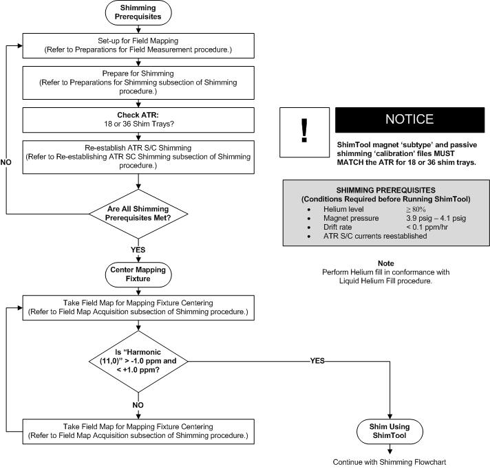

Illustration 1:
Pre-Shimming Flowchart

Procedures Referenced
Liquid Helium Fill
Preparations for Shimming
Preparations for Field Measurement
Re-establishing ATR S/C Shim Currents
Field Map Acquisition